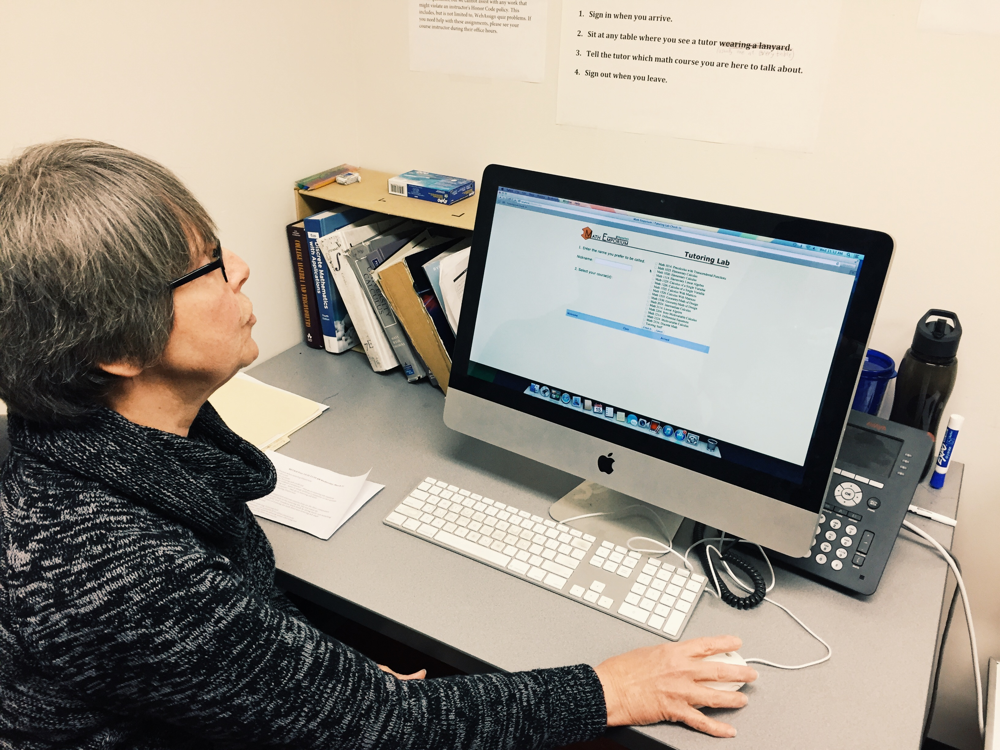
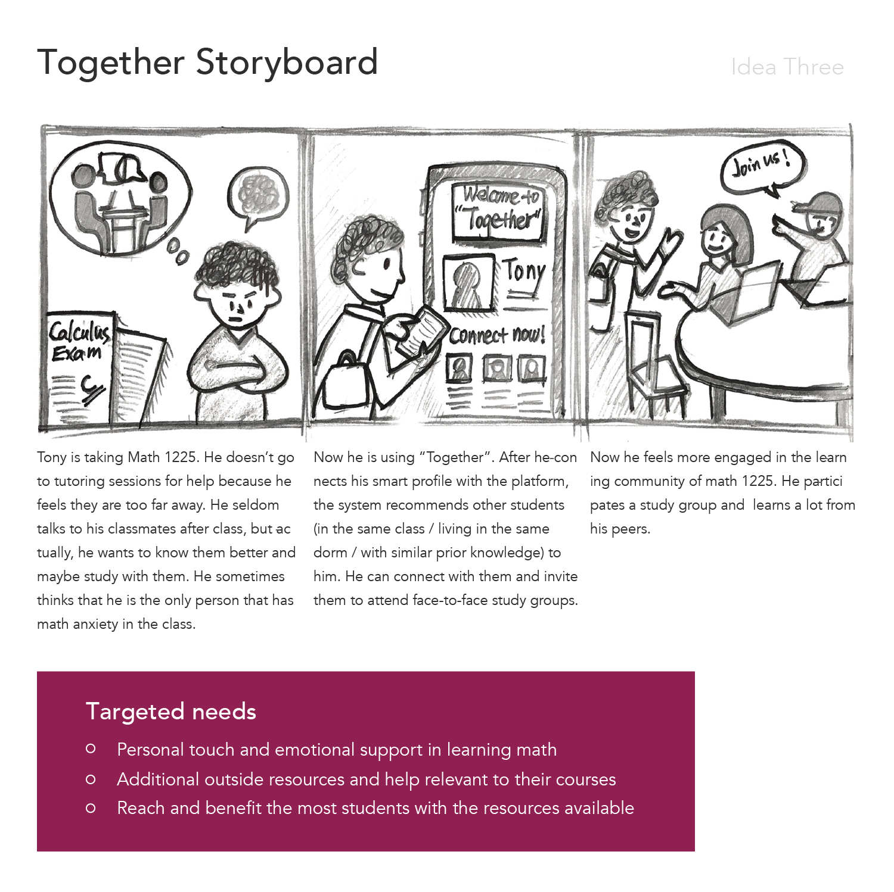
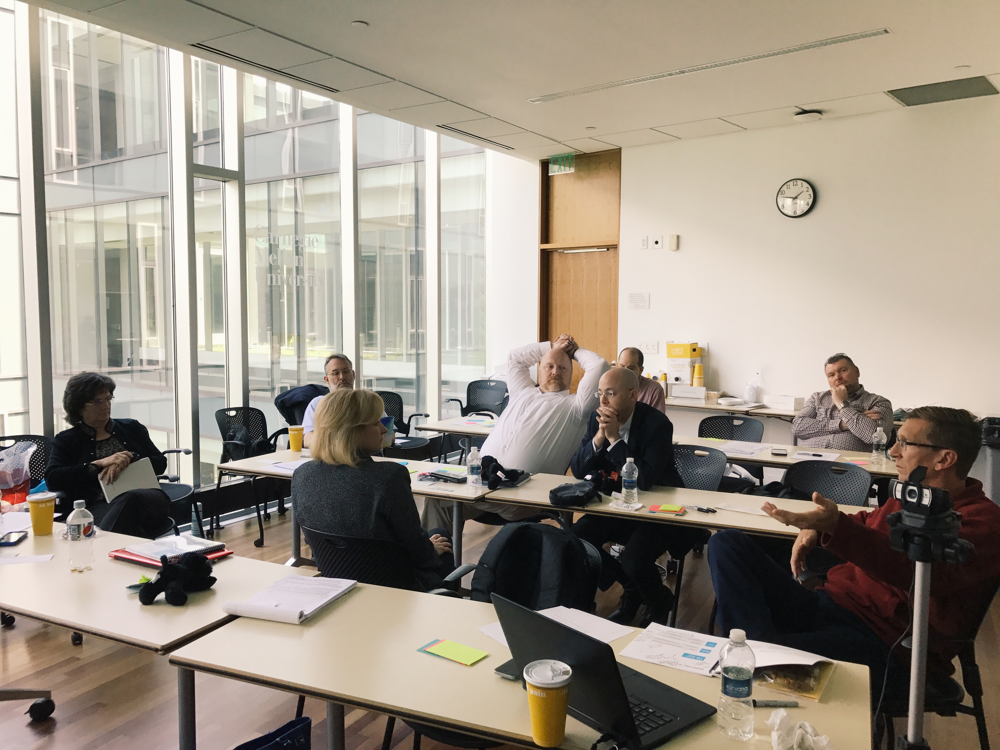

In this Capstone project at CMU, we partnered with Virginia Tech's Provost Office to improve the accessibility and effectiveness of undergraduate tutoring services in science and engineering calculus courses from January 2017 to August 2017. As the Design Lead, I collaborated with one developer, one researcher, and one project manager to deliver Together, a mobile app that enhances peer-learning and tutoring experiences in calculus.
At present, tutors at Virginia Tech have no data to inform their work with individual students. Students seeking tutoring identify the particular concept or procedure they find challenging. Through discussion and practice, the tutor discerns how best to assist the student. This is especially complicated in a group session where the students may bring a diversity of learning challenges to a tutor. Tutoring sessions also are constrained by time. In this project, the challenge is to create a learning resource to facilitate more effective tutoring in individual and group sessions, specifically in foundational calculus courses.
Demo video of final product, Together App
With the help of Virginia Tech, we identified our target audience of students who had received tutoring for Math 1225, the tutors themselves, and coordinators for both tutoring services and calculus. We spoke with 25 participants over a period of three days. Our structured interviews covered general topics, which led to deeper discussions about tutoring experiences. Additionally, we launched a survey to gather feedback from the wider audience, which resulted in 308 responses.
Interviewing a tutoring administrator at Virginia Tech
During the synthesis, we were trying to answer the following questions:
We used the activity affinity diagramming as a bottom-up method to explore and understand the natural relationships among the information collected in the user research. Raw interview data were turned into transcripts and we began sorting and gathering relevant quotes into a format we could easily examine.
Affinity diagram of the user research data
The flow model helped us visualize different categories of findings from user research data and to identify where the system could get improved. In the chart below, red circles represent the pain points reported by students and tutors; green circles represent where the system is currently working well. The size of circles represents the number of people to state it as a pain point/opportunity.
Flow model provides an overview of the tutoring system at VT
Tutors need support to understand student needs and how to meet them. Tutors want more information that guides their tutoring. Also, tutors want students to better understand the goals of tutoring.
Cultural model of math tutoring at Virginia Tech
Initially, ideation is an entirely generative process wherein key themes and concepts from our research take shape into solutions. In later stages, we worked to develop and communicate promising solution concepts that will best meet the needs of our client and target users.
One of the ten storyboards from ideation
At the end of Spring semester, we presented the research we conducted and the ideation that came out of our research to the stakeholders from Virginia Tech. Together, we shared resources, knowledge, and information that we could not access on our own otherwise.
Discussing ideas with stakeholders from Virginia Tech
Virginia Tech and our team agreed to focus on bringing students who need help together in order to connect in a support system while providing information for tutors and administrators. If we can bring people together in a problem-solving environment, then peer teaching and learning could be a powerful addition to tutoring services.
We began our iterative journey with sketches and mockups generated from our research and visioning session. These wireframing methods are quick visual guides for creating outlines of initial ideas. From our sketches we built the first low-fi prototypes. By leaving out details, we were able to quickly test ideas with students and tutors to find what works and where we might improve our design.
Some of the sketches from the sketching session
Early prototyping established the basic structure, interactions, and features we needed to further evaluate our design. We used Axure to create multiple iterations of our medium fidelity prototype. These iterations provided the core results of user testing. We examined the quality of the user flow and looked for user’s confusions and misunderstandings. Additionally, their feedback provided many insights into new features that were implemented as well as existing features that needed more emphasis or reworking.
Some of the sketches from the sketching session
After many rounds of testing many of the core features, interactions and ideas were becoming solidified. We began finalizing designs and refining interactions given all of the user testing data. With the final prototype of Together, we are trying to deliver values for the users through several key features below.
Freshman students reported lacking a strong network of peers. Students have a need for connecting with more friends in their classes, particularly those who share similar study habits and goals.
Students may take an optional quiz to indicate their personal preferences when signing up. This allows Together to match students with each other based on the similarity of needs.
Users can search other users and get recommendations based on preferences. Users can connect with peers with shared preferences.
There are multiple channels of help existing in the community, but students are not always aware of the many options that are available. Even when students know about existing help, it can be difficult to schedule study sessions into their busy lives. Students need to be able to easily find what help is available and be provided with a multitude of convenient options in an easily accessible format.
All events, including peer-to-peer sessions, group tutoring sessions, and office hours, are presented in one place. Users can further filter events by time and topics.
Students can receive a number of notifications. These include friend requests, event reminders, and event invitations. Notifications and reminders are intended to improve students’ attendance rates and commitments.
Different students have different preferences when attending study events. They may want to choose whom they interact with, the topics that will be discussed, the size of the group, or the event dynamics.
Students have a number of options when creating an event. They can make events public or private, set the maximum number of partipants, and choose topics to be discussed.
Group tutoring sessions are sometimes overcrowded. In crowded sessions, students often have to wait for tutors to find time to work with them, and that time is usually limited. The system is in need of an optimized solution to group the students with similar needs. Groupings help improve efficiency by allowing students with similar problems to help each other as well as allowing tutors to work with multiple students at once.
The help queue in Together facilitates offline interactions in tutor-led group study sessions. When students join a session they can add themselves to a queue based on their topic of interest.
Together helps build a data-driven community by collecting key data points from students. These data points may include questions and comments to tutors and instructors. Tutors can receive feedback about their events through student ratings that focus on whether the students accomplished their goals. Administrators can receive information about event frequency, popular topics, and comments.
Students can leave comments and respond to other’s comments before tutoring events. This feature also benefits tutors by allowing them to understand students’ questions and problems ahead of time.